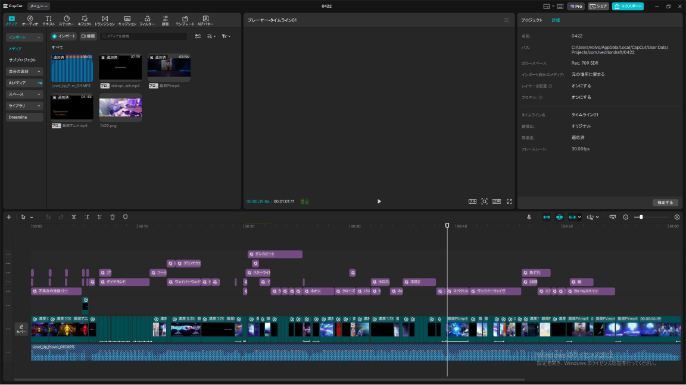

Project Specs
初めて制作した動画作品です。CapCutの字幕起こし機能を活用し、カット編集に合わせてフェードイン・フェードアウトを効果的に取り入れました。
約 4時間
CAPCUT
Project Specs
スマートフォン画面に最適化した初のショート動画制作です。VOICEVOXおよびゆっくりMovieMaker4（YMM4）を初めて使用しました。
30分
VOICEVOXYMM4
Project Specs
VOICEVOX音声を用いたゲーム解説動画に挑戦しました。完成後、動画のテンポや抑揚における新たな改善点を見つけることができました。
6時間
VOICEVOXYMM4
Project Specs
崩壊スターレイルの「花火」ファンムービーを制作しました。演出としてエフェクトを多用したほか、スマートフォン向けのショート版も作成しています。
5時間
CAPCUT
Project Specs
崩壊スターレイルの「銀狼」MADを制作しました。前作の花火ファンムービーに比べ、エフェクトの使い分けや音声に合わせたカット編集能力が向上しました。
5時間30分
CAPCUT
https://youtu.be/kL-DRakCgIo
